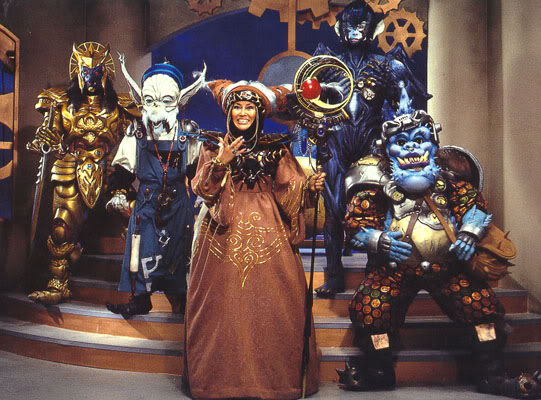

El Poder de las
API REST
Jhony Grillet

Jhony Grillet
Desarrollador Javascript
(a.k.a. Ch1nux Par1bus)
¡Advertencia!
¿Algun@ se acuerda de esto?
¡Yo si!
El Poder de las API REST
- ¿Qué es una API?
- ¿Qué es y que NO es REST?
- Tipos de API REST
- Datos interesantes...
- API REST y Gobierno Abierto
- API REST y el Software Libre
¿Qué es una API?
Es el punto de partida, las armas de todo desarrollador
¿Qué es una API?
- Application Programming Interface (o Interfaz de programación de aplicaciones)
- Comprende todas las funcionalidades de una aplicación
- Orientadas por la arquitectura de desarrollo
- Pueden ser públicas o privadas
- Independientes del lenguaje de programación.
¿Qué es una API?
API = ZORDON
- Es el que manda
- Es el que les da el poder
- Es el que sabe lo que puede hacer cada uno
- ¡Es el JEFE!
¿Qué NO es REST?
- NO es un CRUD...
- NO es una aplicación...
- NO es un lenguaje de programación...
- NO es un protocolo...
- NO es una API...
¿Qué es REST?
- REpresentational State Transfer (Transferencia de Estado Representacional).
- Es un estilo arquitectónico.
- Tiene su propia semántica, independiente de los lenguajes de programación.
- Basado en el Protocolo HTTP.
- Cualquier API puede estar basada en éste.
- Creado por Roy Fielding, PhD en Computación de la Universidad Irvin de California, en el año 2000.
- Ideal para sistemas distribuidos.
¿Qué es REST?
Cliente - Servidor
¿Qué es REST?
No posee estados
¿Qué es REST?
Recursos uniformes y bien definidos

¿Qué es REST?
Sintaxis universal de identificación de recursos
Tipos de API REST
- Orientada a Datos
- Orientada a Servicios
- Orientada a Hypermedia
- Orientada a Detección
1. Orientada a Datos
- Cada recurso es un dato o una colección de datos
- Los datos son paginables
datos.com/data?page=20&limit=5 - Rápida en peticiones, "lenta" en masificaciones
- Poco consumo de ancho de banda, alta demanda
transaccional - Alto rendimiento de intercambio de información
2. Orientada a Servicios
- Cada recurso es un método a ser procesado en otro
servidor - No es paginable pero si parametrizable
datos.com/metodo?valor1="valor"&valor2=2&token=5b... - Lenta en peticiones, "más lenta" en masificaciones
- Elevado consumo de ancho de banda, con alta demanda
transaccional - Rendimiento de intercambio de información supeditado
a la conexión cliente-servidor
3. Orientada a Hypermedia
- Cada recurso es un multimedia (video, imagen, audio,
streaming, etcétera) - No es paginable, ya que cada recurso es un elemento
multimedia específico - Lenta en peticiones, muy rápida en masificaciones
(altamente "cacheable") - Elevado consumo de ancho de banda, con baja demanda
transaccional - Alto rendimiento de intercambio de información
4. Orientada a Detección
- Cada recurso es un "caché de recursos" pre-procesados
- Paginable, parametrizable y altamente configurable
- Suele procesar peticiones en "tiempo real"
- Alta demanda transaccional
- Muy alto rendimiento en el intercambio de información
Algunos ejemplos notables...
Algunos datos interesantes...
- El gobierno de los E.E.U.U. tiene más de 100 mil API REST (públicas y/o privadas, mayormente orientadas a datos)
- El término de búsqueda API REST en Google produce más de 60 millones de resultados (y sigue en aumento)
- Existe un atlas de complejidad económica basado en API REST (¡y dirigida por un venezolano!)
Algunos datos interesantes...
Google Trends: API REST vs API SOAP
API REST y Gobierno Abierto
En el viejo continente...
- Holanda: API REST de salud para universalizar las historias médicas de los pacientes.
- Escocia e Irlanda del Norte: API REST de datos judiciales. Recopilación de leyes e historial de casos de interdicción civil
- Islas Canarias: Universalización de la gestión municipal mediante API REST interoperadas
- India: Registro público de más de 5 mil API REST (de todos los tipos) alojadas en servidores en ese país
API REST y Gobierno Abierto
...de este lado del charco
- Guatemala: API REST anti-corrupción donde se muestra periódicamente la inversión pública
- Panamá: Núcleo de transacciones bancarias único y universal (independiente de las plataformas de las agencias bancarias)
- Argentina y Chile: Sistema universal de elecciones. Resultados en tiempo real (API REST de detección)
- Colombia: API REST de detección para seguimiento y control de rutas de transporte público masivo (¡es Ley!)
API REST y Gobierno Abierto
En Venezuela, tenemos varios enemigos a vencer...
API REST y Gobierno Abierto
Burocracia...
API REST y Gobierno Abierto
Trampa de "confidencialidad"...
API REST y Gobierno Abierto
Conflicto de intereses...
API REST y Gobierno Abierto
"Mala" Crítica...
API REST y Gobierno Abierto
Centralización...
API REST y el Software Libre
¡Hay para elegir!
API REST y el Software Libre
¡Hay para elegir!


"Mucha gente pequeña, en lugares pequeños, haciendo cosas pequeñas, puede cambiar el mundo."